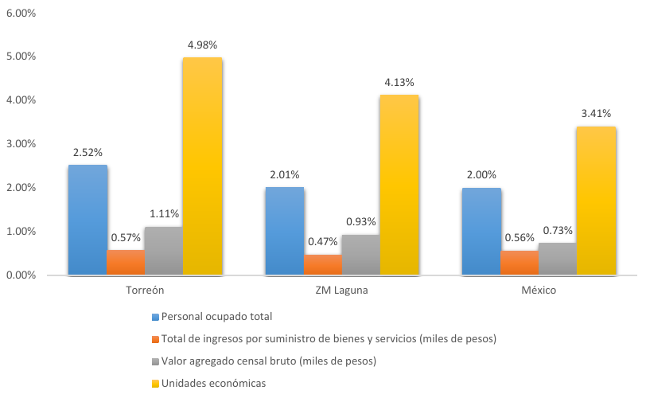

Infraestructura
En la ZML se registran 173 unidades médicas distribuidas entre hospitales, consultorios externos, establecimientos de apoyo y asistencia social. Ello representa una densidad de 13.3 unidades médicas por cada 100,000 habitantes. Poblaciones mayores a la ZML como Monterrey, Distrito Federal o Tijuana, tienen una densidad de 18.6, 18.1 y 15.4, respectivamente.
La prevención y atención temprana de la población tiene relación directa con la accesibilidad de la ciudadanía a consultorios médicos. En este sentido en la ZML hay 1.7 consultorios médicos por cada 10,000 personas. Para este mismo indicador Hermosillo registra 3.3, Aguascalientes 2.8 y Tijuana 1.3. Señalemos que dichas ciudades tienen una población similar a la de la ZML y que Tijuana cuenta con un reconocido clúster de salud.
Distribución de unidades médicas entre sector público y privado
El sector público de salud representa el acceso universal de la población de un municipio o entidad a servicios proporcionados por instituciones gubernamentales, mientras el ámbito privado muestra el peso económico de los servicios de salud prestados por empresas especializadas. Las unidades médicas de la ZML se encuentran distribuidas de la siguiente forma: 85% pertenecen al sector público y 15% al privado. Situación similar a Monterrey y Saltillo. Destaca el caso de Tijuana, donde 61% son entidades privadas. En Ciudad de México 40% son privadas y 60% públicas.
Participación económica del sector salud
Durante 2013 la cadena de valor salud en la ZML produjo 1,244,242 miles de pesos. La aportación de dicha cadena a la economía de la región es pequeña contrastada con el comercio y la manufactura. Habría que señalar que en La Laguna el sector salud aporta más a la economía regional que lo que el sector salud del país aporta a la economía nacional.
Actualmente, el sector de servicios de salud y asistencia social cuenta con 5,786 empleados, lo que representa 2.01% del personal ocupado total de la ZML. 4,677 están en Torreón, equivalente al 2.52% del personal ocupado total del municipio. A nivel nacional el 2% del personal ocupado total pertenece al sector de servicios de salud.
El sector salud contribuye con 1.11% del valor agregado total de Torreón y 0.93% del valor agregado de la ZML. A nivel nacional el sector salud contribuye con 0.73% del valor agregado del país. Indiquemos que el valor agregado se entiende como generación de riqueza y como el concepto más cercano al Producto Interno Bruto.
En 2004 la productividad laboral del sector salud en México era de 204 mil pesos por trabajador, mientras en la ZML era de 179 mil pesos. Para 2014 la productividad en la ZML se ha mantenido en los mismos niveles, pero la media nacional ha caído a 186 mil pesos por trabajador, lo cual muestra la creciente competitividad de la cadena de valor salud en La Laguna.
Los subsectores de la salud y asistencia social con mayor influencia en La Laguna son: servicios médicos de consulta externa y servicios relacionados, hospitales y las residencias de asistencia social y cuidado para la salud. Los hospitales captan 39.25% del personal ocupado del sector salud y asistencia social, generan 55.61% del valor agregado, captan 79.16% de la inversión y reciben el 55.47% de los ingresos.
Productividad Laboral del Sector Salud
| Región | 2004 | 2009 | 2014 |
|---|---|---|---|
| Torreón | $191.347148 | $193.011741 | $190.936677 |
| Z. M. Laguna | $178.689868 | $180.707758 | $177.657020 |
| México | $205.683537 | $178.597656 | $86.117299 |
Unidades: Miles de pesos anuales de 2008 por trabajador.
Fuente: Elaboración propia con datos de los Censos Económicos 2004, 2009 y 2014.
Participación del Sector de Servicios de Salud y Asistencia Social

Recursos Humanos
En 2014, en el sector público, la ZML contó con 3.4 médicos por cada 10,000 personas. Las estadísticas son bajas en relación a Tijuana (2.9) y a Monterrey (4.4). En cuanto a enfermeras la ZML cuenta con 5.1 enfermeras por cada 10,000 habitantes, posicionándose entre Tijuana y Monterrey.
En la ZML hay 3,947 estudiantes de carreras relacionadas con la prestación de servicios de salud. Son 3 estudiantes de ciencias de salud por cada mil habitantes. Índice superior al que muestran Aguascalientes, Querétaro, Tijuana, Saltillo y León e inferior al de Puebla y Hermosillo, que muestran 7 estudiantes en ciencias de la salud por cada 1000 habitantes.
En 2014 egresaron 707 nuevos profesionista en el ramo salud, en carreras como Medicina, Psicología, Nutrición, Enfermería, Odontología y Fisioterapia.
Estudiantes de Ciencias de la Salud en la ZML 2014
| Carrera | Matrícula |
|---|---|
| Cirujano Dentista | 369 |
| Licenciatura en Enfermería | 665 |
| Licenciatura en Fisioterapia | 139 |
| Licenciatura en Nutrición | 764 |
| Licenciatura en Terapia Física y Rehabilitación | 310 |
| Médico Cirujano | 1,553 |
| Psicología | 1,428 |
Plan Salud Laguna
Esta información se presentó a los integrantes del Taller de Planeación del Clúster Salud de La Laguna organizado recientemente por el IMPLAN.
Integrantes del Clúster Salud en La Laguna
- Hospitales y clínicas públicas y privadas.
- Colegios, asociaciones médicas.
- Institutos de investigación médica.
- Técnicos del área de la salud.
- Universidades con carreras del área de la salud.
- Escuelas técnicas del sector salud Instituciones y entidades públicas del sector salud y planeación.
- Proveedores de servicios e insumos médicos.
Fuentes
- Censos Económicos. INEGI.
- Sistema Nacional de Información en Salud. Secretaría de Salud.
- Asociación Nacional de Universidades e Instituciones de Educación Superior.